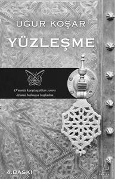

Her şey Bilge Varlık ile karşılaştıktan sonra değişmeye başlamıştı…
Beni yorgun kılanın hayattan öte taktığım maskeler ve zihnim olduğunu öğrendim…
Ve hala toplumun büyük çoğunluğu yüzleşmekten çekindiği için maskeleri ile yaşamı kendine zehir etmekte, cesur olan küçük azınlık ise kendi özüne dönerek dünyada kendi cennetine kucaklamakta,
İşte tam şu anda kendini bahsedilen çoğunluğa mı, yoksa cesur olan azınlığa mı ait hissedeceğine karar vermek üzeresin.
Biliyorum ki sen yaşamın en güzel yerinde soluk almayı hak ediyorsun!